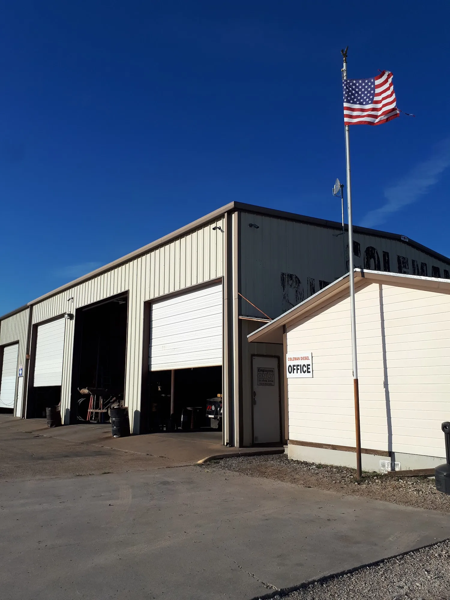
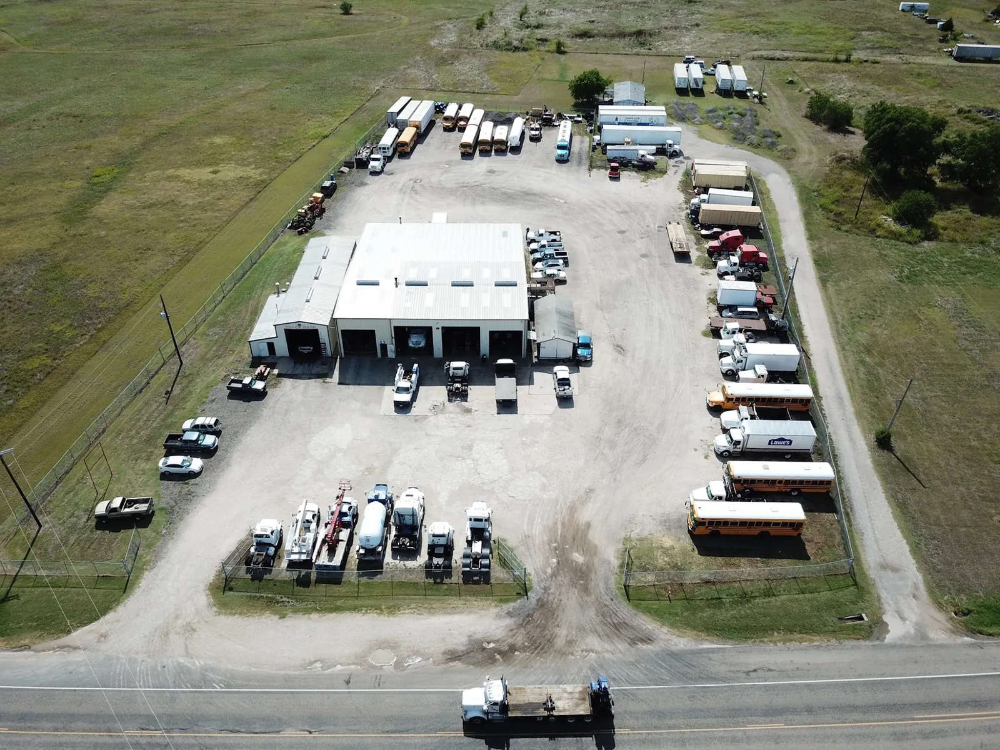

Contact
Call. Pull in.
Find the shop on FM 1570 in Greenville, Texas. Open Monday to Friday, 8 AM to 5 PM Central.
Get in touch
Mon–Fri 8 AM–5 PM CT| Monday | 8 AM – 5 PM |
|---|---|
| Tuesday | 8 AM – 5 PM |
| Wednesday | 8 AM – 5 PM |
| Thursday | 8 AM – 5 PM |
| Friday | 8 AM – 5 PM |
| Saturday | Closed |
| Sunday | Closed |
Central Time. Holiday hours may vary, so call ahead around holidays.

Finding the yard
Right on FM 1570.
The shop and its fenced yard sit right on FM 1570. Pull in off the road; there’s plenty of on-site parking, and the office is the white building beside the flagpole.
FAQ
Good questions.
Where is Coleman Diesel Services?
The shop is at 10460 FM 1570, Greenville, TX 75402, on FM 1570 in Greenville, Texas.
What are the shop hours?
Monday through Friday, 8 AM to 5 PM Central. Closed Saturday and Sunday. Holiday hours may vary: the shop is listed as closed for Thanksgiving and Black Friday, so call ahead around holidays.
What kind of vehicles do they work on?
Diesel and heavy trucks, trailers, work trucks and equipment. Customers also bring in RVs for inspections and oil changes, and photos from the shop show school buses, tankers, dump trucks and mixers.
Do they do DOT and state inspections?
Yes. Customers bring trucks, trailers and RVs to the shop for inspections, and the shop has a drive-over inspection pit.
Do they wash trucks and wash out hoppers?
Yes. Hopper washouts and truck washes come up often in the shop’s Google reviews. Call ahead to line one up.
Can I buy parts there?
Yes. The shop has a parts room and parts counter with parts and filters.
How do I get my truck in?
Call (903) 455-9348. There’s no online booking, so a phone call is the fastest way to get on the schedule.
What payment methods are accepted?
Checks, credit cards, debit cards and NFC mobile payments.
Is the shop accessible?
The shop has a wheelchair-accessible parking lot and a wheelchair-accessible restroom, plus on-site parking.